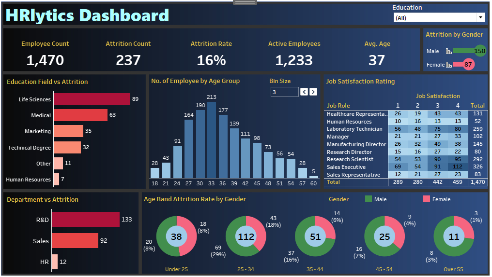
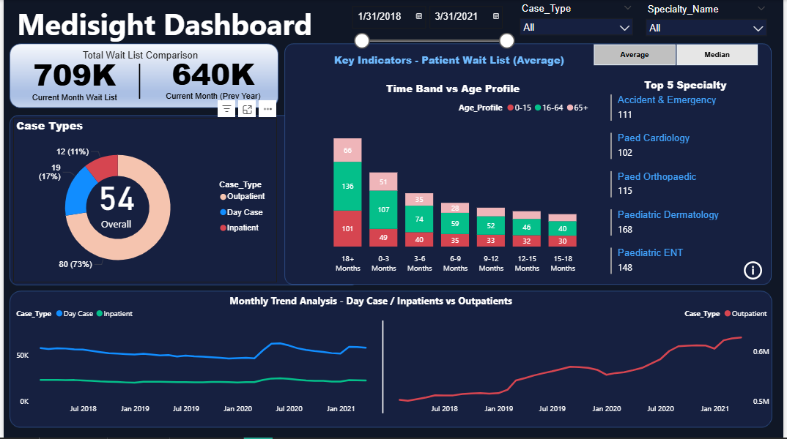
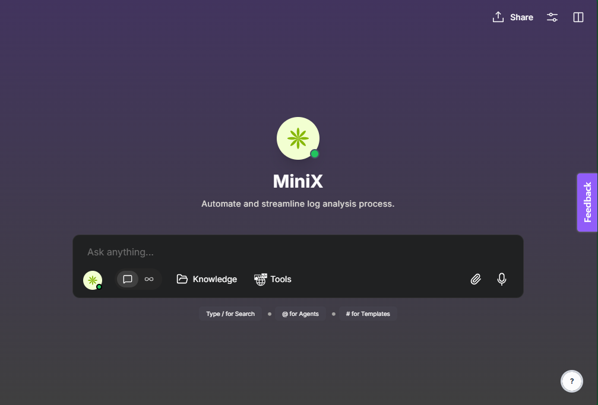

A Power BI dashboard that provides insights into workforce performance, attrition, and diversity trends. Built to help HR teams understand employee dynamics and support smarter, data-driven talent strategies.


An interactive Power BI dashboard that visualizes key healthcare metrics from patient admissions to treatment outcomes. Designed to help healthcare teams track performance, identify trends, and make data-driven decisions.

Explored how to personalize and fine-tune an AI assistant from setup to testing and response optimization. Documented each stage with visuals to show how AI behavior can be shaped for real-world use.